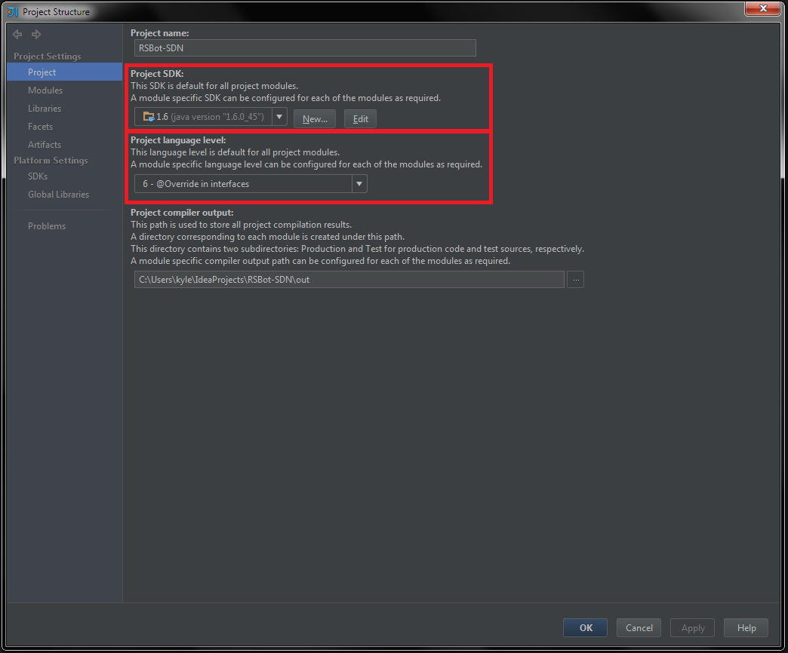
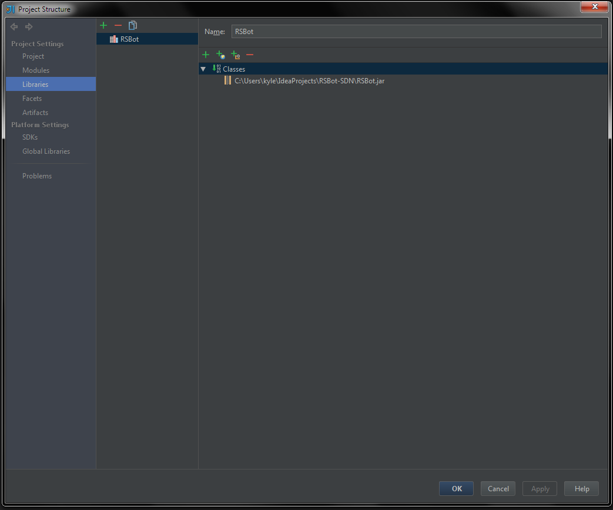
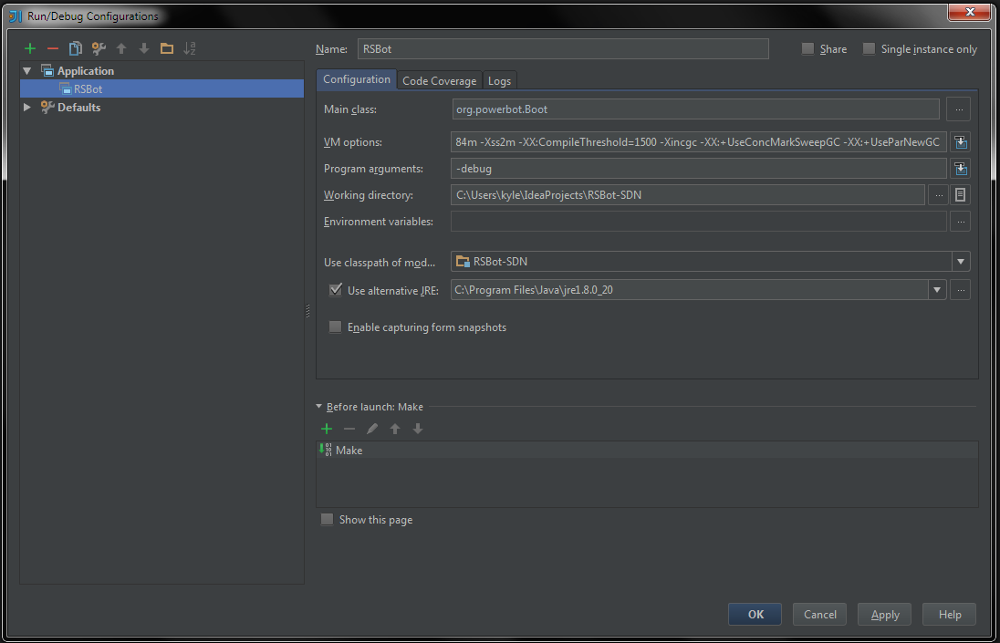

Setting up RSBot for IntelliJ
- Setting the appropriate language level
-
- The RSBot SDN compiles on Java 6, so it is recommended you do the same, to eliminate
possible conflicts.
-
To set your language level:
- Go to File > Project Settings and select Project.
-
Under Project SDK, select JDK 1.6. If you don't have it, you can download it from Oracle
- Just below, there is Project Language Level. Set this to 6.

- Adding RSBot to your Project
-
-
- While still on the Project Settings page, select Libraries from the left.
- Click the green + on the left-hand side and select the "Java" option.
- A file tree will open. Select the RSBot.jar
- Select OK / Apply

- Setting up your Run Configurations
-
-
-
At the top-right of the main window, there is a small button with a arrow (image).
Click it, and select the "Edit Configurations" option.
- Click the green + at the top-left and select "Application"
- Set your main class to org.powerbot.Boot
-
Set your VM Options to
-Xmx384m -Xss2m -XX:CompileThreshold=1500 -Xincgc
-XX:+UseConcMarkSweepGC -XX:+UseParNewGC
- Set your Program Arguments to "-debug". This allows you to load local scripts.
-
Check the "Use Alternate JRE" option. This must be a JRE, not JDK.
OpenGL/DirectX will not work if it is a JDK.
- Select OK / Apply

{kind=link}